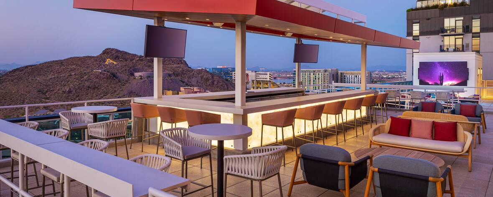

Venue
Meeting Venue
Memorial Union at ASU campus

- Take a virtual tour of the MU: https://tours.asu.edu/tempe/memorial-union
- Download a map (PDF)
Loading (Rates for 2013, subject to change)

Most of the hotels listed below are conveniently located within walking distance of the ASU Campus. Call the hotel directly to make your reservation. ASU and government rates may be available for many of them.
A list of all ASU Discounts are provided through this link: Travel Information for ASU Campus Visitors
- Omni Hotel Book at Preferred ASU rate
- Canopy Hotel, Book at Preferred ASU rate
Tempe Mission Palms Hotel
- 60 East 5th Street Tempe, AZ 85281 (480) 894-1400 www.destinationhotels.com/tempe-mission-palms
- Check in: 3pm Check out: 12pm
- Preferred ASU Rate
- 5 miles from Sky Harbor Int’l Airport – Located NW side of ASU campus/walking distance to ASU. Airport transportation 5:30am- 10:30pm or parking.
- Hospitality fee of $19.95 includes Wi-Fi, fitness center, airport transportation or parking. Full-service hotel restaurant and lounge.
- 303 guest rooms/suites
Sonesta Select Tempe Downtown
- 601 South Ash Tempe, AZ 85281 (480) 966-2800 https://www.sonesta.com /sonesta-select/az/tempe/sonesta- select-tempe-downtown/
- Check in: 3pm Check out: 12pm
- 5 miles from Sky Harbor Int’l Airport – Located NW side of ASU campus/walking distance to ASU.
- Complimentary Wi-Fi, outdoor heated pool, fitness center. Parking $12 day. Mill Street restaurants nearby.
- 155 guest rooms 5 suites
Residence Inn Tempe Downtown/University
- 510 South Forest Ave. Tempe, AZ 85281 (480) 967-2300 https://www.marriott.com/en-s/hotels/phxtd- residence-inn-tempe- downtown- university/overview/
- Check in: 4pm Check out: 12pm
- 5 miles from Sky Harbor Int’l Airport-Located NW side of ASU campus/walking distance to ASU.
- Complimentary Wi-Fi, breakfast, fitness center, business center, outdoor pool. Parking $15 day.
- 11 floors, 173 guest suites with kitchenettes
MOXY Phoenix Tempe (Marriott)
- 1333 S. Rural Road Tempe, AZ 85281 (480) 968-3451 http://www.marriott.com/hotels/travel/phxox-moxy-phoenix- tempe/
- Check in: 4pm Check out: 11am
- 6.5 miles from Sky Harbor Int’l Airport – Located East side of ASU campus/walking distance to ASU.
- Complimentary Wi-Fi, outdoor pool, fitness center. On-site restaurant, lounge. Parking $12 day.
- 190 guest rooms and suites
ALOFT Tempe
- 951 East Playa Del Norte Drive Tempe, AZ 85281 (480) 621-3300 https://www.marriott.com/en -us/hotels/phxal-aloft- tempe/overview/
- Check in: 3pm Check out: 12pm
- 5 miles from Sky Harbor Int’l Airport. 1 mile North of ASU. Complimentary airport shuttle.
- Complimentary Wi-Fi, outdoor pool, fitness center, lounge, snack bar, parking.
- 136 guest rooms
Hyatt House Tempe
- 601 E. 6th Street Tempe, AZ 85281 (480) 207-1578 https://www.hyatt.com/e n-US/hotel/arizona/hyatt- house-tempe-phoenix- university/phxxt
- Check in: 4pm Check out: 12pm
- Book Your Preferred ASU Rate
- 5 miles from Sky Harbor Int’l Airport. Located North side of ASU campus/walking distance to ASU.
- Complimentary Wi-Fi, breakfast, fitness center, outdoor pool. Restaurant on-site. Parking $15 day.kj
- 105 guest rooms/suites
Graduate Tempe
- 225 E. Apache Blvd. Tempe, AZ 85281 (480) 967-9431 http://graduatetempe.com
- Check in: 4pm Check out: 11am
- Book Your Preferred ASU Rate
- 5 miles from Sky Harbor Int’l Airport. Located across the street from south side of ASU campus/walking distance to ASU.
- Complimentary Wi-Fi, outdoor pool, fitness center. Restaurant on- site. Parking $12 day.
Canopy by Hilton
- 108 E. University Drive Tempe, AZ 85281 1-844-MY-CANOPY https://www.hilton.com/en/hot els/phxtypy-canopy-tempe- downtown/
- Check in: 4pm Check out: 12pm
- Book your Preferred ASU Rate
- 6 miles from Sky Harbor Int’l Airport. Located NW side of ASU campus/walking distance to ASU.
- Complimentary Wi-Fi, outdoor pool, fitness center. Restaurant on-site. Valet parking $23 day.
- 198 guest rooms/suites
City of Tempe
The City of Tempe is located in the southeast of the metropolitan Phoenix in Maricopa County, Arizona. Tempe was recently designated as number 2 among The 50 Best Places to Live in the U.S. by the Money Magazine. Among the criteria for this recognition, its economic opportunities, quality of life, and diversity are noted. Home to Arizona State University, Tempe is known for its active arts and culture scene, relative affordability and myriad employment opportunities in education, finance, health care and tech.


Arizona State University
The School of Sustainable Engineering and the Built Environment at Arizona State University (ASU) is the event’s host. ASU is currently the nation’s largest public research university impacting our community, region, and world at a scale that has more than 137,000 master learners across five campuses. Arizona State University, ranked No. 1 “Most Innovative School” in the nation by U.S. News & World Report for eight years in succession, has forged the model for a New American University by operating on the principles that learning is a personal and original journey for each student; that they thrive on experience and that the process of discovery cannot be bound by traditional academic disciplines.
The Ira A. Fulton Schools of Engineering within ASU has an interdisciplinary structure consisting of 7 schools with program offerings on 2 campuses and online, fostering cross-campus and global partnerships. The academic programs, enrollments and graduates include a total of 25 undergraduate degree programs; 50+ graduate programs; approximately 27,000 students (~9,000 online, ~18,000 on-campus); and more than 5,100 graduates across all degree levels in during the 2020-2021 academic year.
Visit ASU: https://visit.asu.edu/travel


Airport Transfer and Information

The ASU Campus is conveniently located within a 10-minute drive to the Phoenix Skyharbor Airport using Taxicabs, Uber, or Lyft. Access to the local hotels or ASU Campus is also possible through the free Airport Tram, to the 44th street station.
The Valley Metro light rail ride ($2.00) to Tempe and ASU Campus (eastbound Train) is about 15 minutes as well. Exit at (university Drive/ Rural Rd. ASU Campus, Get on #10018 and off at 10023)
ASU Tempe Campus
1151 S. Forest Ave., Tempe
Connections:
Route 48 – 48th St
Route 62 – Hardy Dr
Route 66 – Mill Ave/Kyrene Rd
Route 72 – Scottsdale Rd/Rural Rd
FLASH
Orbit Earth
Orbit Jupiter
Orbit Mars
Orbit Mercury
Orbit Venus
Valley Metro Rail (University/Rural)
Things To Do Around Arizona
Tempe
Tempe Town Lake (boat rentals)
ASU Art Museum
Hike “A” Mountain
Tempe Center for the Arts
Phoenix
Desert Botanical Garden
Phoenix Zoo
Hiking Camelback Mountain
Hiking Piestewa Peak
Musical Instrument Museum (MIM)
Heard Museum
Phoenix Art Museum
Arizona Science Center
Gilbert
Scottsdale
Butterfly Wonderland
The OdySea Aquarium
REI Co-op Experiences
Old Town Scottsdale
Fashion Square Mall
Mesa
Sedona
Pink Jeep Tours
Grand Canyon Railway
Segway and Bike Tours
Wine Tours
Horsin’ Around Adventures
Grand Canyon
Page, AZ
Horseshoe Bend Rafting
Antelope Canyon Tours
Lake Powell Boat Tours
Antelope Canyon